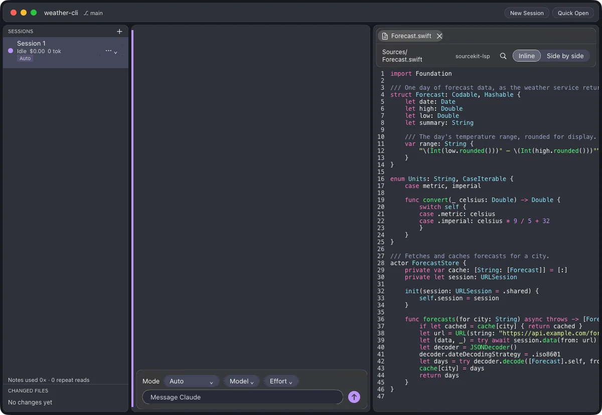
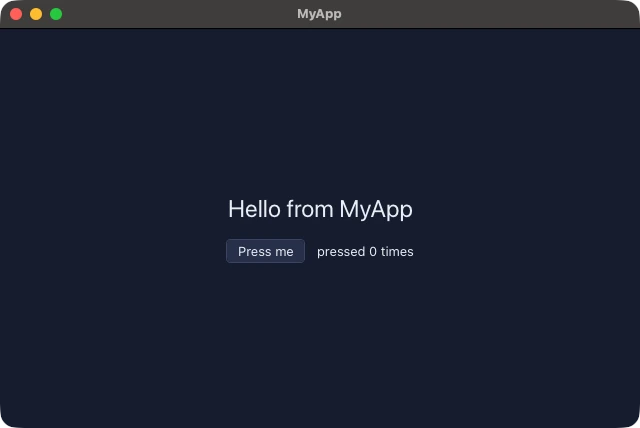
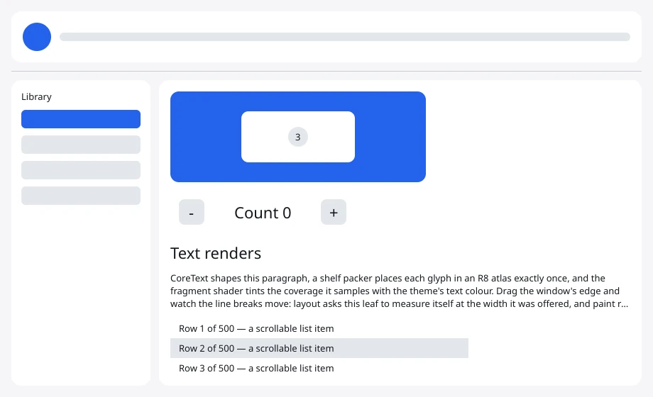
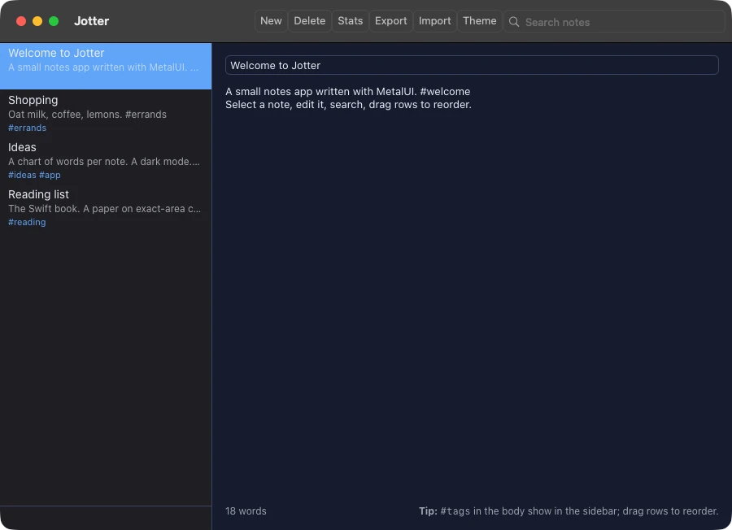
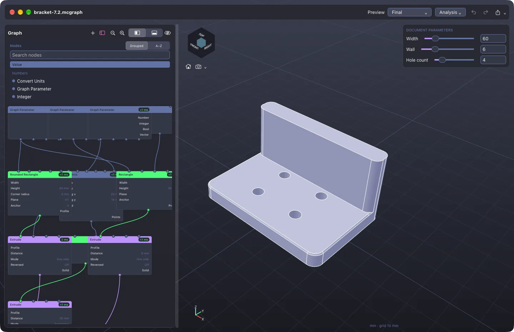
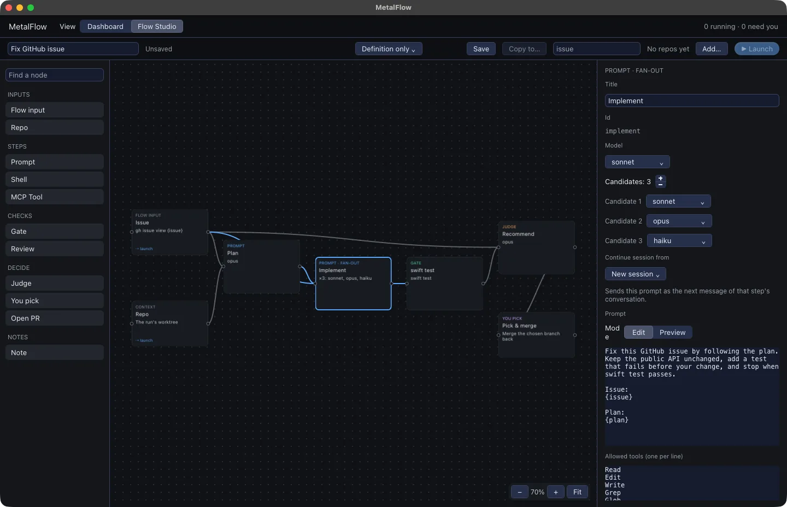

Alloy
Alloy — a native macOS editor for working with several Claude Code sessions on one project, built entirely on MetalUI.
MetalUI is a GPU-accelerated UI framework for Swift. It follows SwiftUI's semantics, draws with Metal on the Mac and through SDL3 on Linux and Windows, and every place it differs from SwiftUI is written down.

Experimental — the API still changes. The generated app pins MetalUI to one commit until you move it. Needs Swift 6.4.
git clone https://github.com/mburger89/MetalUI.git
swift run --package-path MetalUI metalui new MyApp
cd MyApp && swift run MyAppChecked from a fresh clone on macOS 27.2 (Apple Silicon) with Swift 6.4.2: the window opens and the generated test passes.
Install SDL 3.4 or later first (Ubuntu 24.04 only ships SDL2, so build it from source), then create the app with --cross-platform and fetch AccessKit's C bindings once.
git clone https://github.com/mburger89/MetalUI.git
swift run --package-path MetalUI metalui new MyApp --cross-platform
cd MyApp
swift package resolve
python3 .build/checkouts/MetalUI/Backends/SDL/scripts/fetch-accesskit.py --prefix /usr
swift run MyAppThe SDL3 build commands, with the package list, are in getting-started.md. metalui new --cross-platform --no-accesskit skips the AccessKit step. Checked in a clean Swift 6.4.2 Linux container (aarch64): swift build and swift test pass; the window itself was not opened there because the container has no display.
git clone https://github.com/mburger89/MetalUI.git
swift run --package-path MetalUI metalui new MyApp --cross-platformCI-verified, not run by hand for this page. Windows needs SDL3's prebuilt Visual C++ package unpacked and its paths handed to SwiftPM; the cross-platform guide has the exact steps.
The scaffold is one file of UI. @State, a component with a content builder, stacks and a button, as in SwiftUI.
import MetalUI
struct ContentView: Component {
@State var presses = 0
var content: some ElementGroup {
Text("Hello from MyApp").font(size: 24)
Row(gap: Pixels(12)) {
Button("Press me") { presses += 1 }
Text("pressed \(presses) times")
}
}
}

The stacks, controls and modifiers keep SwiftUI's names and layout rules. What changes is mostly spelling: lengths are Pixels, and a custom component implements content where a view implements body.
struct Counter: View {
@State private var presses = 0
var body: some View {
VStack {
Text("Hello").font(.title)
Button("Press me") { presses += 1 }
}
}
}struct Counter: Component {
@State var presses = 0
var content: some ElementGroup {
VStack {
Text("Hello").font(size: 24)
Button("Press me") { presses += 1 }
}
}
}VStack(alignment: .leading) {
HStack { Text("Name"); TextField("Name", text: $name) }
HStack { Toggle("Enabled", isOn: $on); Spacer(); Button("Apply") { apply() } }
HStack { Text("Speed"); Slider(value: $speed) }
Divider()
}
.padding(16)VStack(alignment: .leading) {
HStack { Text("Name"); TextField("Name", text: $name) }
HStack { Toggle("Enabled", isOn: $on); Spacer(); Button("Apply") { apply() } }
HStack { Text("Speed"); Slider(value: $speed) }
Divider()
}
.padding(Edges(all: Pixels(16)))Text("Hello")
.padding(24)
.frame(maxWidth: .infinity, maxHeight: .infinity)
.background(Color(.windowBackgroundColor))Text("Hello")
.padding(Pixels(24))
.frame(maxWidth: Pixels(.infinity), maxHeight: Pixels(.infinity))
.background(.surface)These are the common cases, not a promise of identical behaviour everywhere. Every live difference is listed, with the test that pins it, in divergences.md. Moving from the older flexbox-style vocabulary is covered in migration.md.

Alloy — a native macOS editor for working with several Claude Code sessions on one project, built entirely on MetalUI.

MetalCreator: a node-based parametric CAD app for macOS, Linux and Windows, built on MetalUI.

MetalFlow: a macOS app for building flows of coding agents as node graphs and running many of them at once, built on MetalUI.
Each figure comes from a record in the repository, which says how it was taken.
TextField and into a CodeView, headless: 400 frames before, 200 after. A stray key-up no longer redraws an unchanged window. Record 277AppKitWindow. Record 300Picker, down to 4.9 KBPicker value after its options moved to a copy-on-write heap box, as the record states it. The same change cut the stack a lone menu Picker needs in a macOS debug build (measured with StackMeter) from 482 KB to 239 KB. Record 302